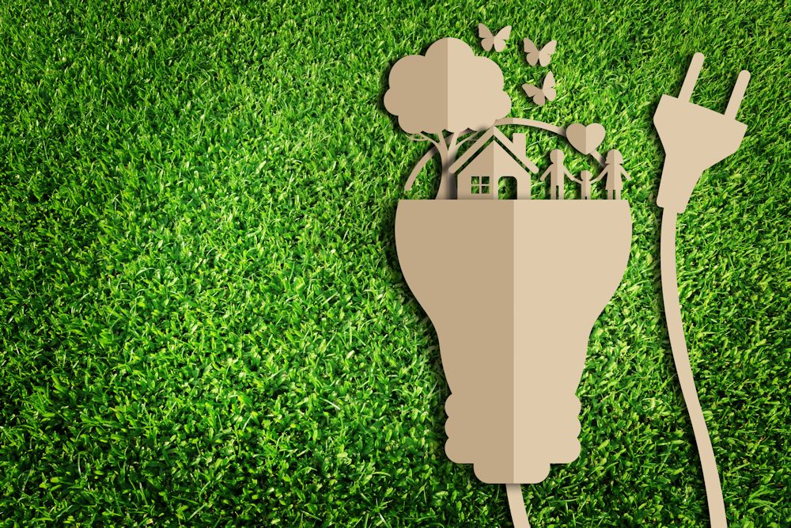

- Sursele de date – Informațiile au fost extrase din baze de date publice și recunoscute internațional: Eurostat, Institutul Național de Statistică al Spaniei (INE), Institutul pentru Diversificarea și Economia de Energie (IDAE), Ministerul Tranziției Ecologice (MITECO) și rapoartele Agenției Europene de Mediu (EEA).
- Perioada analizată – Jurnalul acoperă intervalul 2020–2025, perioadă în care Spania a accelerat tranziția energetică, a primit fonduri europene NextGenerationEU și a implementat noi politici de adaptare climatică.
- Metoda de analiză – Indicatorii de sustenabilitate (procent de energie regenerabilă, emisii CO₂ pe cap de locuitor, suprafață protejată, consum de apă) au fost centralizați și comparați cu media UE-27. Datele au fost interpretate calitativ pentru a evidenția tendințe, succese și domenii care necesită îmbunătățiri.
